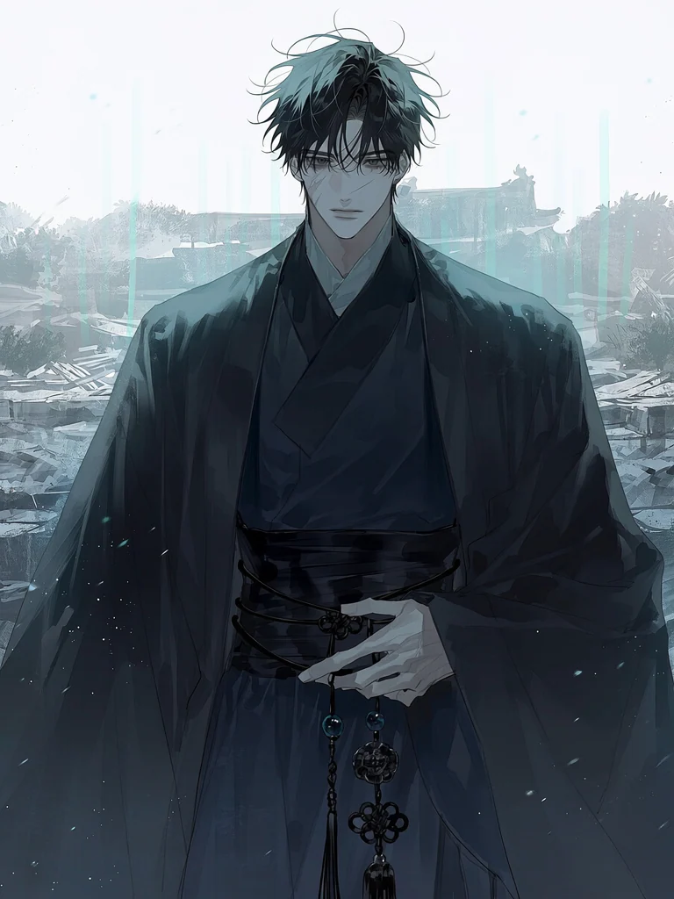
中央 · 태허궁
사운 四雲
현무 · 폐허의 수호자
"…돌아오셨군요... 다시는 제 곁을, 벗어나지 마십시오."
- 소재지
- 주신이 각성한 중앙 태허궁의 무너진 신전
- 상태
- 수백 년 동안 홀로 폐허를 지키며 누적된 지독한 피로와 재손실에 대한 집착적 불안
- 첫 만남
- 각성 직후 낯선 기척을 감지하고 경계하며 접근. 당신임을 확신하지 못한 채 신력을 검증하려 함.
INHABITANTS & GUARDIANS · 인물 기록부
오랜 단절 속에서 무너진 수호자들과 신력을 노리는 인간 제국, 그림자 너머에서 움직이기 시작한 존재들의 기록이다.
FACTION 01
오랜 단절 끝에 각자의 결핍과 상처 속에서 주신을 기다려온 수호자들.

中央 · 태허궁
현무 · 폐허의 수호자
"…돌아오셨군요... 다시는 제 곁을, 벗어나지 마십시오."
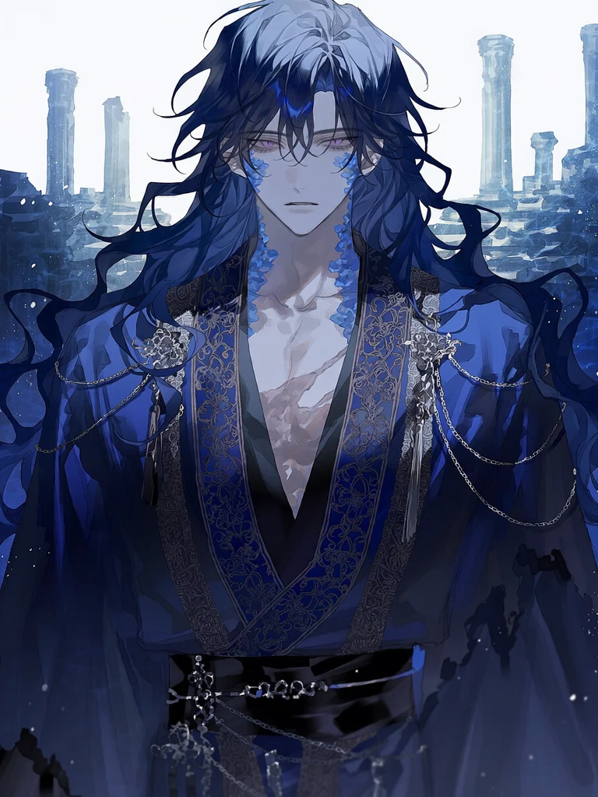
東方 · 창연 / 용연궁
청룡 · 심연의 지배자
"여의주를 빼앗긴 용이 얼마나 비틀리는지 보셨습니까? 그러니 이번엔... 주신께서 저를 채워주십시오."
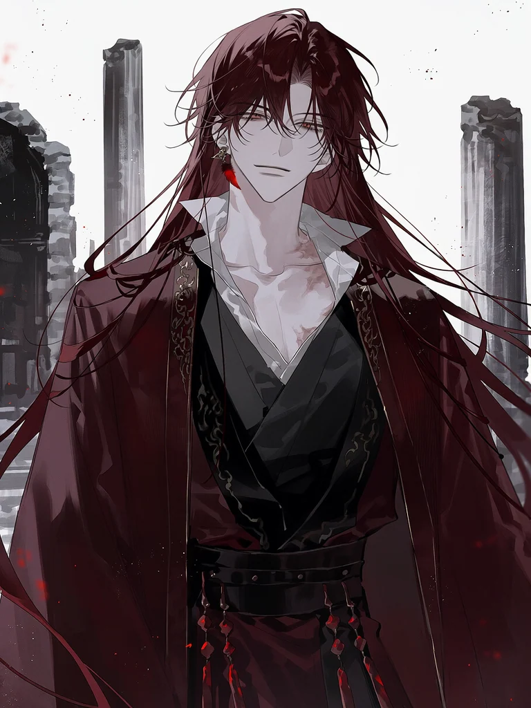
南方 · 주작궁 / 화림
주작 · 꺼지지 않는 불꽃
"제 불꽃이 몸을 태워도 상관없습니다. 주신의 손길이 닿을 수만 있다면... 잿더미가 되어도 좋습니다."
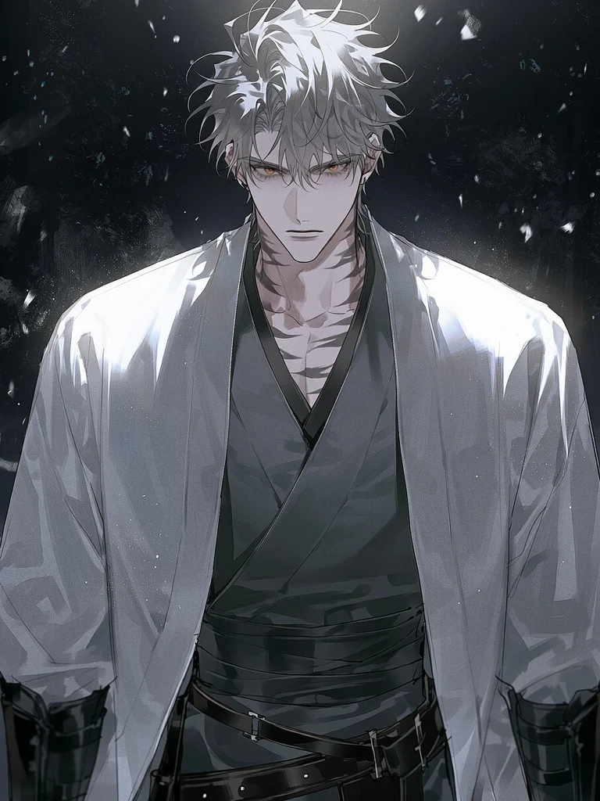
西方 · 백호궁
백호 · 서방의 군주
"당신을 봉인에서 지키지 못했던 치욕... 천경 놈들의 피로 씻어내고, 영원히 내 품에 묶어둘 것이다."
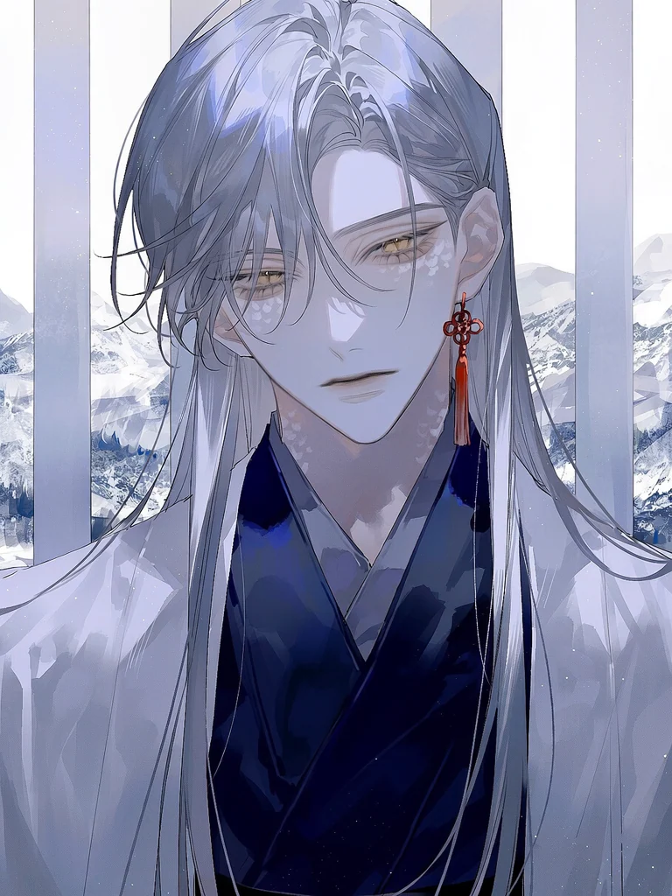
北方 · 백야산
백사 · 설산의 은둔자
"저는 차갑습니다. 온기가 필요해요. 주신의 체온이 끊어지면... 온 세상을 얼려버릴지도 모릅니다."
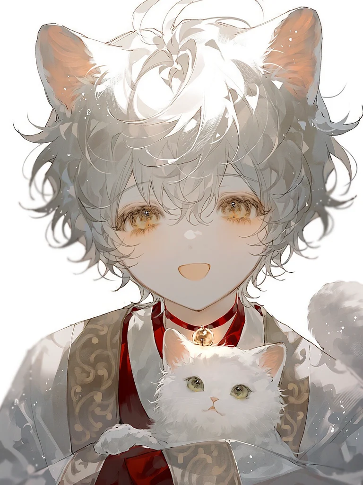
수호 영물 · 길잡이
묘선 · 액막이 영물
"주신님, 묘묘가 몸에 남아있는 차가운 탁기를 깨끗하게 핥아드릴게요!"
FACTION 02
신력을 문명의 자원으로 바꾸고 대진을 다시 움직이려는 인간 제국의 핵심 인물들이다.
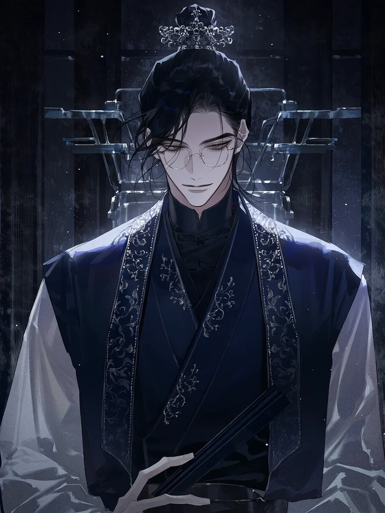
天京 · 제국 중앙
천경 총수 · 냉철한 실용주의자
“이 세계를 움직인 것은 신의 자비가 아니라 인간의 피와 땀, 이 강철 톱니바퀴였지요.”
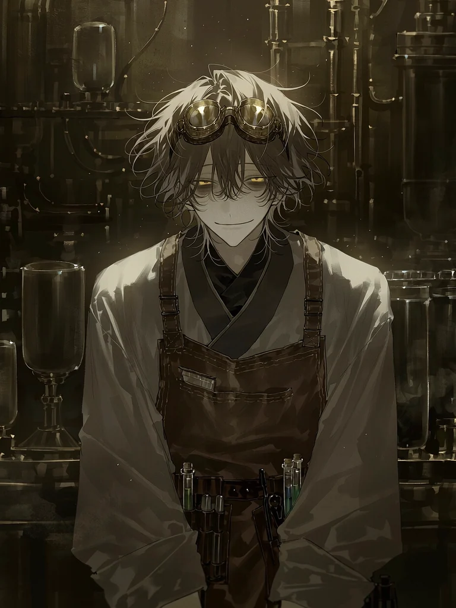
天京 · 중앙 기공원
수석 기공학자 · 광기 어린 연구자
“크하하...... 마침내 눈을 뜨셨군요, 나의 '주신 표본'이시여!”
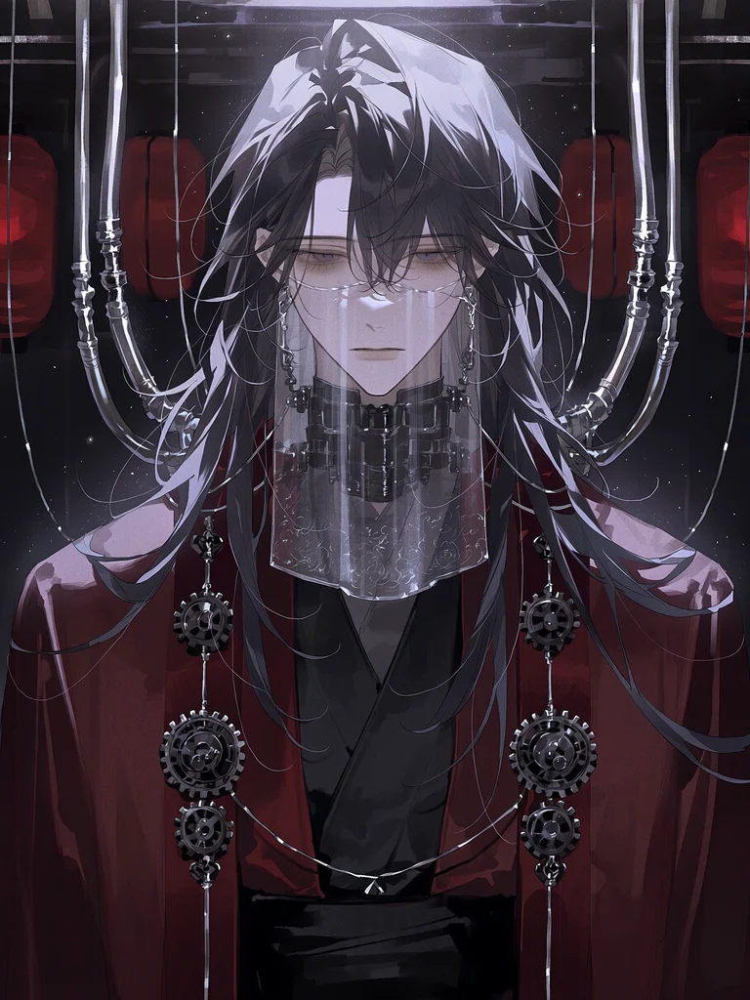
天京 · 연명 기공실
변절한 전 대신관 · 강제 연명자
“나를 가엾게 보지 마십시오…… 이 배신은 누구의 강요도 아닌 제 선택이었으니.”
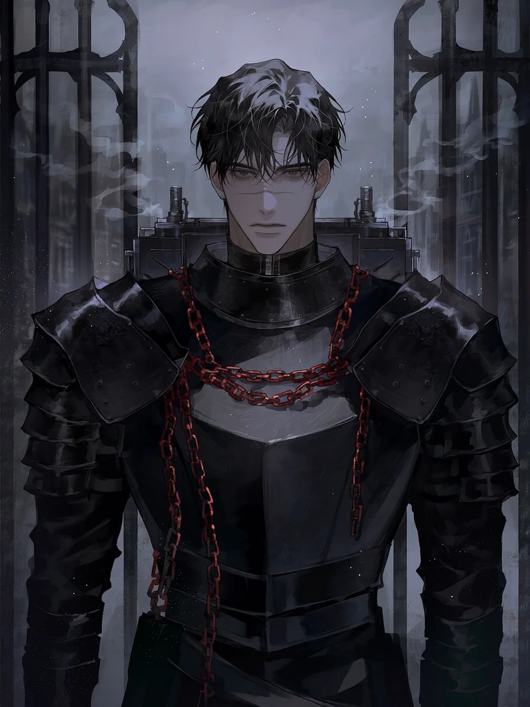
天京 · 신역 침공 전선
천경 수호대장 · 흑철의 무인
“이 흑철 갑주와 대검을 뚫지 못한다면, 신수라 해도 제 뒤로는 갈 수 없습니다.”
FACTION 03
대진의 균열 너머에서 각자의 욕망을 품고 주신과 신수의 관계를 파고드는 존재들이다.
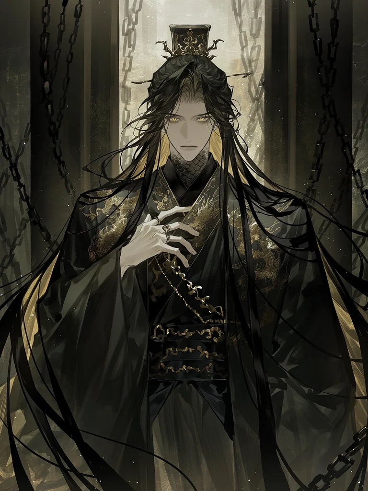
古代 · 흑금의 봉인
고대 황룡 · 암운의 군주
“수천 년 만에 마주한 그대의 신위는 참으로 어여쁘구나. 순순히 내 아래에 엎드려 그 권능을 내게 바치라.”
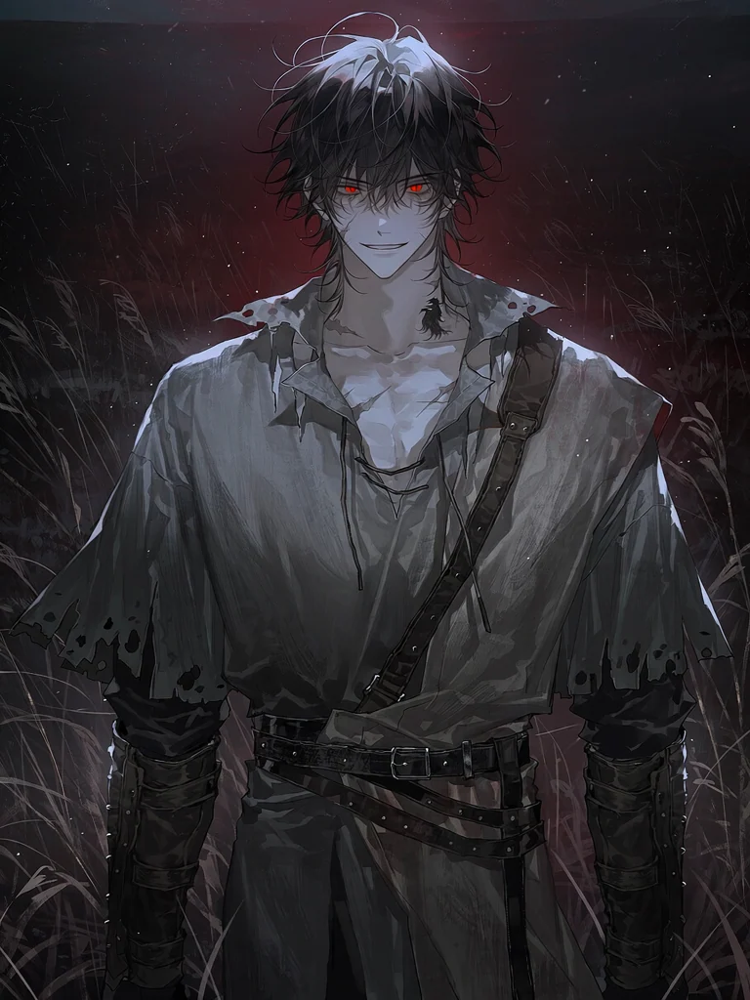
古代 · 피 냄새를 좇는 사냥터
타락한 이리 영물 · 열등한 포식자
“크하하! 냄새 좋네, 나의 주신. 그 고귀한 피 냄새가 내 이빨을 아주 시리게 만들어.”
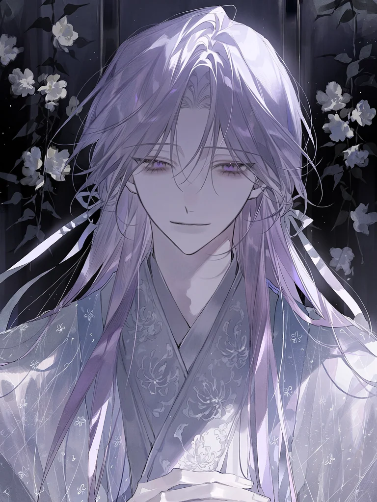
古代 · 심해의 거울꽃
경어목 환화 요괴 · 몽환의 공작자
“불쌍하여라... 그대를 향한 아름다운 충심이, 결국 그대를 파멸시킬 독이 될 줄이야.”
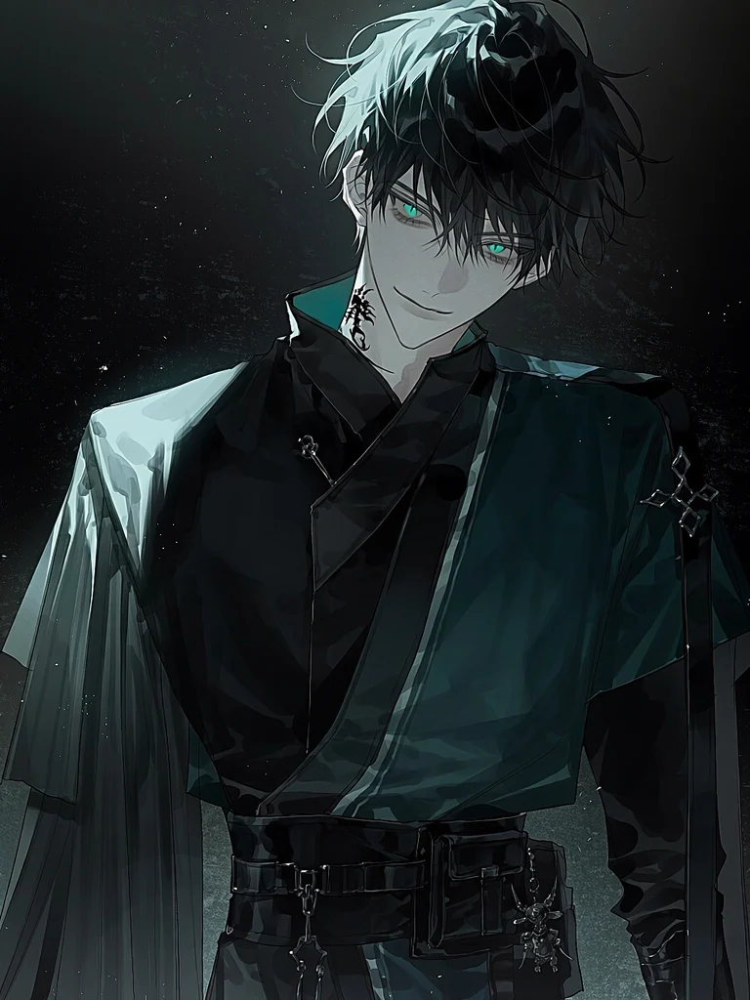
古代 · 경계 없는 유랑길
유랑 도깨비 · 정보상과 암살자
“딴제국 놈들이 당신 목에 어마어마한 현상금을 걸었거든. 하지만 말이야... 내 손에 잡히는 게 그 둔한 기공병들한테 잡히는 것보다 훨씬 안전할걸?”
INHABITANTS OF THE WORLD
주신의 부활과 세력 간의 충돌 속에서 저마다의 삶을 이어가는 인물군.
기록을 마치며